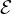
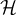

Our goal in machine learning is to select a hypothesis that will optimally fit future examples. We make the assumption that our future examples will be like the past, and follow the same probability distribution (stationarity assumption), and that every example is independent of previous examples. Examples that satisfy these equations are independent and identically distributed (i.i.d.).
We can say that the optimal hypothesis is the one that minimizes the error rate: the proportion of times that h(x)≠y for an (x,y). This is done by measuring the model’s performance on a test set of examples. To prevent the model from peeking at the test answers, we split the examples we have into a training set and a test set.
Our model class might have some parameters (called hyperparameters) and we might want to find the optimal values for them. Tuning the hyperparameters by measuring error rates on the test set is also considered as peeking. So, we can divide our data data into a training set to train the model, a validation set to tune the hyperparameters, and a test set to do an unbiased evaluation.
If we don’t have enough data, we can use k-fold cross validation. We split the data into k equal subsets. We perform k rounds of learning. On each round, we use 1∕k of the data as a validation set and the rest as the training set. The average test score of the k rounds is used. Popular values of k are 5 and 10, enough to give a better estimate at a cost of 5 to 10 times longer computation time. When k = n we call it leave-one-out cross validation (LOOCV).
Part of model selection is qualitative and subjective. Based on what we know about the problem, we might prefer some model classes over others. Then we can qualitatively select the best model class based on performance on the validation data set.
We can measure the complexity of a model based on attributes such as the number of nodes in a decision tree or the number of neural network parameters. The training set error approaches zero as the complexity increases, but the validation error starts to increase after some point due to overfitting. Some model classes, such as decision trees, never recover from overfitting. Others classes such as deep neural networks, kernel machines, etc. can use the larger capacity fit a larger number of suitable representations, hence the validation error tends to decrease as the capacity increases.
Model classes start to overfit as the capacity approaches the point of interpolation, which is when the model exactly fits all the training data. This is because the model’s capacity is concentrated on the training examples and the remaining capacity is allocated in a way that is not representative of the training data.
In machine learning, it is traditional to express the model’s performance in terms of a loss function that needs to be minimized. The loss function L(x,y,ŷ) is the amount of utility lost by predicting h(x) = ŷ when the correct answer is f(x) = y. We can often use a simplified version L(y,ŷ) that is independent of x.
One misclassification might be worse than another. For example, if a spam-detection algorithm classifies a spam email as non-spam, then it’s just a minor annoyance, but if a non-spam email is classified as spam, then the user might miss an important message. Hence, we might want to give a larger value to L(nospam,spam) than to L(spam,nospam).
We consider smaller errors to be better than larger ones. We can quantititatively implement this using loss functions such as L1 loss and L2 loss. For discrete-valued inputs, we can use the L0∕1 loss function.
| L1(y,ŷ) | = |y -ŷ| | ||
| L2(y,ŷ) | = (y -ŷ)2 | ||
| L0∕1(y,ŷ) | = 0 if y = ŷ else 1 |
To compute the expected loss over all input-output pairs, we define a probability distribution P(X,Y ) over the examples. Then we can define the expected generalization loss over the set of examples  for a hypothesis h as:
The best hypothesis h* is the one that minimizes expected generalization loss:
Since P(x,y) is not known in most cases, the learning agent can only estimate generalization loss with empirical loss on a set of examples E of size N.
The estimated best hypothesis ĥ* is the one with the minimum empirical loss:
ĥ* may differ from the true function f due to unrealizability, variance, noise and computational complexity. A problem is realiizable if the hypothesis space  actually contains the true function f. f may be non-deterministic or noisy - it may return different values of f(x) for the same value of x.
The early years of machine learning concentrated on small-scale learning where the number of training example ranges from dozens to the low thousands, and generalization loss usually came from approximation error of not having f in the hypothesis space. Recently there has been a shift towards large-scale learning with millions of examples, where the generalization loss is dominated by limits of computation.
Complicated hypotheses have a tendency to overfit. Regularization is the practice of penalizing complex hypotheses. This is done using a regularization function which depends on the hypothesis space. For example, for polynomials, a choice of regularization function may be the sum of squares of coefficients. Taking regularization into account, we can define the total cost as:
λ is a hyperparameter that serves as a conversion rate between loss and complexity. However, it is possible to avoid the conversion factor by encoding the hypothesis as a Turing machine program and counting the number of bits required to encode the data. The minimum description length hypothesis minimizes the total number of bits required.
Models can also be simplified by reducing the dimensions that they work with. Feature selection can be performed to discard irrelevant attributes.
We also want to select the best values for hyperparameters. The simplest approach is hand-tuning, where we guess parameter values based on past experience or intuition. If there are only a small number of possible values, grid-search can be used, which tries all combinations and sees which performs best on the validation data. If there are too many combinations, then we might use random search by sampling some values randomly and repating as long as we are willing to spend the time and resources.
Bayesian Optimization treats hyperparameter tuning as a machine learning problem in itself. We think of the vector of hyperparameters, x as an input, and try to find the function y = f(x) which minimizes the loss y. Each pair of (y,f(x)) can be used to update our belief about the shape of the function f. We want to trade off exploitation (choosing parameter values near a previous good result) with exploration (trying novel values).
An alternative to Bayesian optimization is population-based-training (PBT). PBT first uses random search to train a population of models, each with different hyperparameter values, then training a second generation whose hyperparameter values are determined by the best-performing values of the previous generation, plus random mutation.